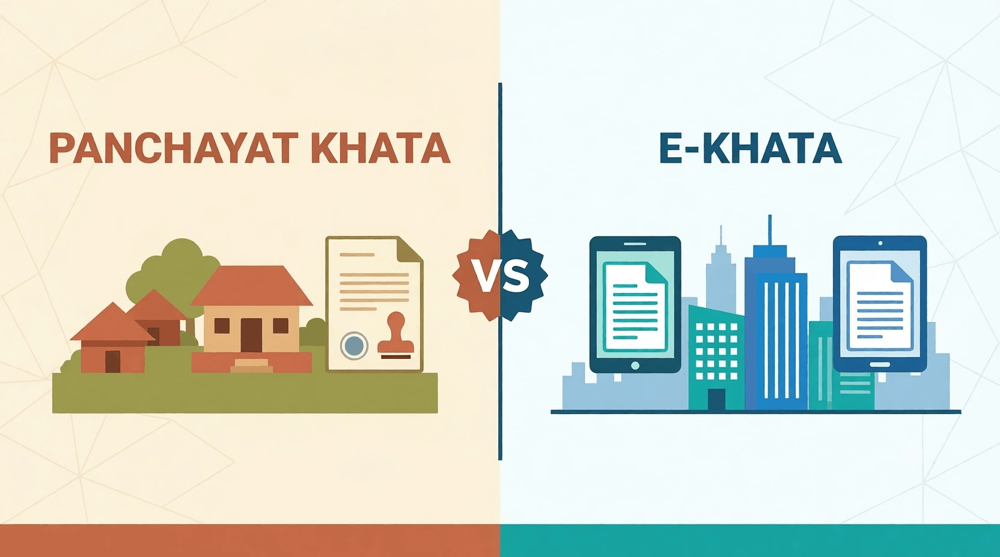

Panchayat Khata vs E-Khata: Which One Do You Need?
If you're buying, selling, or managing property around Bangalore, you've probably run into two terms that sound similar but mean very different things: Panchayat Khata and E-Khata. Many buyers assume they're interchangeable — they're not, and mixing them up can create real problems during registration, loan approval, or resale.
The confusion usually comes down to one thing: jurisdiction. A property's location determines which governing authority issues its Khata, and that authority determines whether you get a Panchayat Khata or an E-Khata. In this guide, we'll break down what each one is, how they differ, and — most importantly — how to figure out which one applies to your property.
At Marvel Consultants, we help property owners across Bangalore with Khata Transfer, E-Khata Registration, Panchayat Khata documentation and property verification.
Quick Summary
A Panchayat Khata is issued by a Gram Panchayat for rural and semi-urban properties, with mostly manual records. An E-Khata is the digital khata maintained by BBMP for properties within urban Bangalore limits. Neither is "better" — the right one depends entirely on where your property sits.
What is Panchayat Khata?
A Panchayat Khata is a property record maintained by a Gram Panchayat — the local self-governing body for rural and semi-urban areas. It confirms that a property exists in the Panchayat's records for taxation purposes and gives basic details like the owner's name, property size, and location. Not every property is eligible for one; it depends on which local body has jurisdiction over the land.
What is a Gram Panchayat Khata?
A gram panchayat khata is essentially the same document, just named after the specific local body — the Gram Panchayat — that issues it. It's used mainly for villages and areas that fall outside municipal or corporation limits. The record helps the Panchayat track property ownership and collect local property tax, but it does not carry the same legal weight as an urban Khata issued by a municipal corporation.
Who Issues Panchayat Khata?
The Gram Panchayat office with jurisdiction over the property issues this Khata. Since Panchayats operate at the village or cluster-of-villages level, the exact office depends on where the land is located. Property owners typically need to apply in person or through a local intermediary, since most Panchayats still rely on manual, paper-based processes rather than centralized online systems.
What is E-Khata?
E-Khata is the digital version of a property's Khata record, designed to make ownership and tax details accessible online instead of relying on physical registers. It reduces paperwork, minimizes tampering risk, and speeds up processes like tax payment and property verification.
Understanding Panchayat E Khata
Here's where confusion often creeps in. Some Gram Panchayats have started digitizing their own khata records — this is sometimes referred to as panchayat e khata. However, it's important not to assume this is the same as BBMP's E-Khata system. Panchayat e-khata initiatives vary by region, are not uniformly implemented, and don't automatically carry the same legal or procedural weight as BBMP's system. Always verify with the specific Panchayat office whether digital records are available and how they're treated.
What is E Khata Bangalore?
E khata Bangalore typically refers to the E-Khata system maintained by the Bruhat Bengaluru Mahanagara Palike (BBMP) for properties within municipal limits. This is the digital khata most people mean when they say "E-Khata" — it applies specifically to properties governed by BBMP, not to rural or Panchayat-administered land. If your property falls within BBMP jurisdiction, this is the system relevant to you, and our BBMP E-Khata services in Bengaluru can handle the application and verification for you.
Panchayat Khata vs E-Khata – Major Differences
Issuing Authority
Panchayat Khata is issued by the local Gram Panchayat, while E-Khata (BBMP) is issued by the municipal corporation governing urban Bangalore.
Physical vs Digital Records
Panchayat Khata records are largely maintained on paper and stored locally, while E-Khata records exist in a centralized digital database accessible online.
Loan Eligibility
Banks and financial institutions generally treat E-Khata properties as lower-risk due to verified digital records, which can make loan approval smoother. Panchayat Khata properties may face additional scrutiny or require supplementary documentation.
Panchayat Khata vs E-Khata Comparison Table
| Parameter | Panchayat Khata | E-Khata |
|---|---|---|
| Governing Authority | Gram Panchayat | BBMP (or urban local body) |
| Applicable Area | Rural / semi-urban | Urban / municipal limits |
| Record Type | Physical (mostly) | Digital |
| Online Availability | Limited / varies | Widely available |
| Property Tax | Collected by Panchayat | Collected by BBMP |
| Transfer Process | Manual, office visits | Online-assisted |
| Documentation | Basic ownership/tax records | Detailed, verifiable digital records |
| Loan Acceptance | Case-by-case | Generally accepted |
| Suitable Property Type | Village/rural land | Urban residential/commercial |
| Registration Support | Limited | Streamlined |
When Do You Need Panchayat Khata?
Buying Property in a Gram Panchayat
If you're purchasing land or a home in a village or area governed by a Gram Panchayat, this is the Khata you'll need to establish tax and ownership records — and it also applies if you're planning to sell rural property later, since buyers will expect this documentation.
Property Tax Purposes
Panchayat Khata is essential for paying local property tax within Panchayat limits. Without it, you may be unable to prove tax compliance or transfer the property smoothly.
When Do You Need E-Khata?
Buying Property in Bangalore
If your property falls within BBMP limits, E-Khata is the document you'll need for registration, resale, and loan processing. It's the standard expectation for urban Bangalore transactions. You can rely on our BBMP E-Khata services in Bengaluru to handle the application and verification process for you.
BBMP Property Owners
If you already own property under BBMP jurisdiction, maintaining an updated E-Khata ensures your tax records, ownership details, and transfer eligibility stay in order — and it also gives you the convenience of managing property details online rather than through repeated office visits.
Can Gram Panchayat Khata Be Converted to E-Khata?
Eligibility
Conversion is generally possible only when a property's jurisdiction changes — for example, when a village or area previously under a Gram Panchayat gets brought under BBMP or another urban local body limits. Simply wanting a digital record isn't sufficient grounds for conversion.
General Process
The process typically involves:
-
Confirm Jurisdiction Status
Confirm the updated jurisdiction status of the property.
-
Submit Existing Documents
Submit existing Panchayat Khata documents along with proof of ownership.
-
Apply Through the Urban Local Body
Apply through the relevant urban local body once the area is officially notified as coming under its limits.
-
Pay Fees & Await Verification
Pay applicable fees and await verification.
Since requirements can vary by area and change over time, it's worth consulting a professional before starting this process.
Common Mistakes Property Buyers Should Avoid
Confusing Panchayat Khata with BBMP E-Khata
These are not interchangeable. Assuming a Panchayat Khata carries the same legal standing as a BBMP E-Khata can cause complications during registration or loan applications.
Assuming All Panchayat Properties Have Digital Records
Not every Gram Panchayat has digitized its records, and even where "panchayat e khata" exists, it may not offer the same functionality or legal recognition as BBMP's system. Always verify directly with the local office, and double-check jurisdiction and tax records before finalizing any purchase.
Frequently Asked Questions (FAQs)
1. What is Gram Khata?
Gram Khata is another term commonly used for the property record maintained by a Gram Panchayat, functionally the same as a Panchayat Khata.
2. Is Gram Panchayat Khata the same as Panchayat Khata?
Yes, both terms refer to the same document issued by the Gram Panchayat for properties under its jurisdiction.
3. What is Panchayat E Khata?
It refers to digitized khata records maintained by certain Gram Panchayats, though availability and legal recognition vary by region.
4. Is E Khata Bangalore applicable to all properties?
No, it applies specifically to properties within BBMP or other urban local body limits, not to rural Panchayat-governed land.
5. Which is better, Panchayat Khata or E-Khata?
Neither is inherently "better" — the correct document depends entirely on your property's location and governing authority.
6. Can Panchayat Khata be converted to E-Khata?
Only if the property's jurisdiction officially changes from Panchayat to an urban local body like BBMP.
7. Does Panchayat Khata prove ownership?
It primarily serves tax and record-keeping purposes; for full legal ownership proof, registered sale deeds and other supporting documents are needed.
8. Can I get a home loan with Panchayat Khata?
It's possible, but banks often apply extra scrutiny, and approval may depend on additional documentation.
9. Who issues E-Khata in Bangalore?
BBMP issues E-Khata for properties within its municipal jurisdiction.
10. How can I verify my property's Khata?
You can check with the relevant Gram Panchayat office or BBMP's online portal, depending on your property's location.
Not Sure Which Khata Your Property Needs?
Marvel Consultants helps you verify jurisdiction, sort out Panchayat Khata or E-Khata documentation, and handle transfers and conversions end-to-end. Contact our team today for expert guidance before your next property move.
Conclusion
The right Khata for your property comes down to one question: which authority governs the land — a Gram Panchayat or BBMP? Panchayat Khata suits rural and semi-urban properties with manual record-keeping, while E-Khata offers digital, streamlined records for urban Bangalore properties. Getting this distinction wrong can delay registration, complicate loan approvals, or create resale headaches down the line.
If you're unsure which Khata applies to your property, or need help with verification, transfer, or conversion, Marvel Consultants can guide you through the process and make sure your documentation is in order before you make your next move.